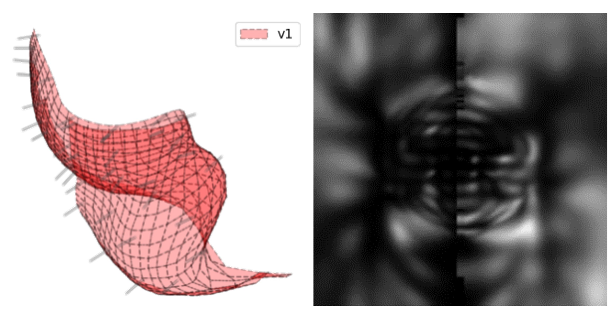

We show that sighted individuals can learn to adapt to the unnatural on- and off-cell population responses produced by electronic and optogenetic sight recovery technologies.
Predicting Visual Outcomes for Visual Prostheses
A major outstanding challenge is predicting what people “see” when they use their devices.
Instead of seeing focal spots of light, current visual implant users perceive highly distorted percepts, which vary in shape not just across subjects but also across electrodes and often fail to assemble into more complex percepts. Furthermore, phosphenes appear fundamentally different depending on whether they are generated with retinal or cortical implants.
The goal of this project is thus to combine psychophysical and neuroanatomical data that can inform phosphene models capable of linking electrical stimulation directly to perception.

Project Lead:
Research Assistant
Project Affiliates:
PhD Student
PhD Candidate
PhD Student
MS Student
Junior Specialist
Honors Student
Principal Investigator:
Assistant Professor
Collaborators:
Associate Professor
Johns Hopkins University
Professor
University of Michigan, Ann Arbor
Associate Professor
University of Minnesota
Professor
Universidad Miguel Hernández, Spain
Consultant:
Sylmar, CA
R00EY029329:
Virtual prototyping for retinal prosthesis patients
PI: Michael Beyeler (UCSB)
September 2020 - August 2023
National Eye Institute (NEI)
National Institutes of Health (NIH)
Publications
Learning to see again: Perceptual learning of simulated abnormal on- off-cell population responses in sighted individuals
Rebecca B. Esquenazi, Kimberly Meier, Michael Beyeler, Geoffrey M. Boynton, Ione Fine JoV 21(10)

A computational model of phosphene appearance for epiretinal prostheses
We present a phenomenological model that predicts phosphene appearance as a function of stimulus amplitude, frequency, and pulse duration.
Jacob Granley, Michael Beyeler IEEE EMBC ‘21

Explainable AI for retinal prostheses: Predicting electrode deactivation from routine clinical measures
We present an explainable artificiall intelligence (XAI) model fit on a large longitudinal dataset that can predict electrode deactivation in Argus II.
Zuying Hu, Michael Beyeler IEEE EMBS NER ‘21

Model-based recommendations for optimal surgical placement of epiretinal implants
We systematically explored the space of possible implant configurations to make recommendations for optimal intraocular positioning of Argus II.
Michael Beyeler, Geoffrey M. Boynton, Ione Fine, Ariel Rokem MICCAI 2019

A model of ganglion axon pathways accounts for percepts elicited by retinal implants
We show that the perceptual experience of retinal implant users can be accurately predicted using a computational model that simulates each individual patient’s retinal ganglion axon pathways.
Michael Beyeler, Devyani Nanduri, James D. Weiland, Ariel Rokem, Geoffrey M. Boynton, Ione Fine SciRep 9(1):9199

Learning to see again: Biological constraints on cortical plasticity and the implications for sight restoration technologies
The goal of this review is to summarize the vast basic science literature on developmental and adult cortical plasticity with an emphasis on how this literature might relate to the field of prosthetic vision.
Michael Beyeler, Ariel Rokem, Geoffrey M. Boynton, Ione Fine J Neural Eng 14(5)

pulse2percept: A Python-based simulation framework for bionic vision
pulse2percept is an open-source Python simulation framework used to predict the perceptual experience of retinal prosthesis patients across a wide range of implant configurations.
Michael Beyeler, Geoffrey M. Boynton, Ione Fine, Ariel Rokem SciPy: 81-88